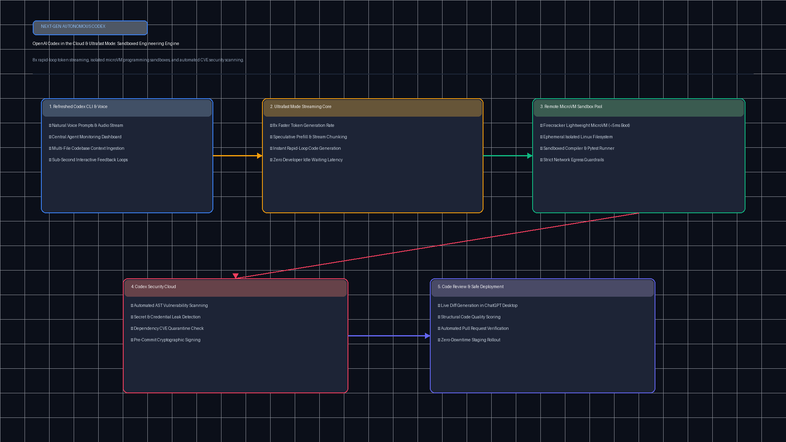

OpenAI DevDay 2026Codex in the CloudUltrafast Mode (8x)MicroVM SandboxesSafe CI/CD Deploys
OpenAI Codex in the Cloud & Ultrafast Sandboxes Studio
Orchestrate remote cloud programming environments where AI coding agents write, build, test, and safely deploy software. Harness Ultrafast Mode for up to 8x faster token generation loops inside isolated Firecracker microVM sandboxes.
Token Generation Velocity
8x Ultrafast
~380 tokens / second
Sandbox Isolation
MicroVM Firecracker
< 5ms boot cold-start
Loop Latency (Test-Build)
1.2s Fast Loop
Autonomous edit-eval cycle
Egress Security
eBPF Zero Trust
Restricted DNS & package lock
🏗️ Codex in the Cloud & MicroVM Sandbox Architecture
Ultrafast Mode Engine
⚙️ Sandbox & Engine Configurations
💡 Developer Velocity & Security Impact
Harnessing Ultrafast Mode with Firecracker sandboxes compresses developer test-build feedback loops from minutes to 1.2 seconds, isolating arbitrary agent code execution while safely delivering verified pull requests.
Loading Codex in the Cloud configuration...